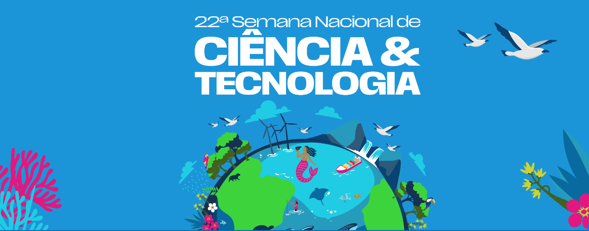

Calculadora de Consumo de Água
Descubra se você está ajudando o meio ambiente!
Quantos banhos por semana?
Quantos minutos em média cada banho?
Descargas por dia:
Lavar louça por semana (vezes):
Máquina de lavar por semana (vezes):
Calcular